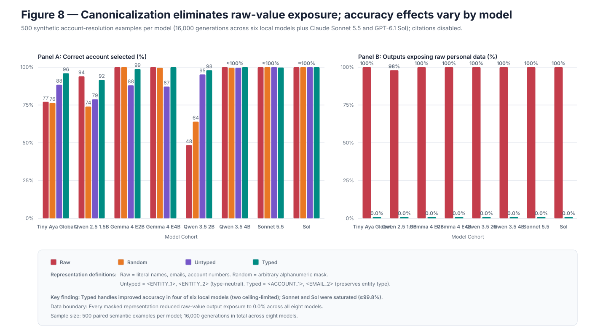

Hypothesis
Consistent typed handles such as <ACCOUNT_1> preserve entity relations better than neutral <HANDLE_1> placeholders while both remove literal protected values.
A controlled account-resolution benchmark asks whether request-scoped canonicalization can preserve entity binding while removing literal names, emails, phone numbers, addresses, and account numbers from model context and output.
Result in one line. Typed handles show supported gains in four of six primary local models and ceiling-limited gains in two; all 9,000 local masked-condition outputs produced 0.0% literal raw-value exposure.
Citation labels are only one kind of machine-facing identifier. Production agents also encounter customer IDs, emails, accounts, and transactions whose literal spelling is often irrelevant to the reasoning task.
Consistent typed handles such as <ACCOUNT_1> preserve entity relations better than neutral <HANDLE_1> placeholders while both remove literal protected values.
The claim weakens if typed handles fail to outperform untyped handles under exactly matched token lengths, or if raw values reappear in masked outputs.
All records are synthetic. “Exposure” means exact configured raw values appearing in generated text; it is not anonymity, encryption, unlinkability, or authorization.
Each prompt contained 15 or 20 synthetic customer records. Citations were disabled and source labels stayed fixed as [S1], isolating entity surface form. Every case was rendered as raw PII, random masks, untyped canonical handles, and typed canonical handles.
Literal synthetic names, emails, phone numbers, addresses, and accounts.
Arbitrary replacement strings with no stable type cue.
Consistent neutral references such as <HANDLE_1>.
Consistent references such as <EMAIL_2> and <ACCOUNT_1>.
960 generations
Across 240 model/example pairs, typed handles gained 18.3 points over untyped (45 wins, 1 loss). The three-model token-matched subset gained 10.8 points.
12,000 generations
The frozen local cohort excludes both LFM checkpoints. Effects are classified per model as supported, ceiling-limited, nonsignificant, null, or negative rather than pooled into one fleet-wide number.
4,000 generations
Both models operated at ceiling: Sonnet scored 99.8–100.0%, while Sol scored 100.0% in every condition. Every masked frontier condition also had 0.0% literal exposure.
typed-over-untyped local effects
Qwen 3.5 checkpoints
configured raw values in local masked outputs
| Model | Raw | Random | Untyped | Typed | Typed − untyped (95% CI) | Token Δ |
|---|---|---|---|---|---|---|
| Tiny Aya | 77.2% | 76.4% | 88.4% | 96.0% | +6.4 pp [4.0, 9.0] | +36.0 |
| Qwen 2.5 1.5B | 94.0% | 74.0% | 78.8% | 91.6% | +11.4 pp [8.0, 14.6] | +0.0 |
| Gemma E2B | 100.0% | 100.0% | 88.0% | 98.8% | +13.0 pp [10.0, 16.2] | +0.0 |
| Gemma E4B | 100.0% | 99.6% | 87.2% | 100.0% | +13.4 pp [10.4, 16.4] | +0.0 |
| Qwen 3.5 2B | 48.4% | 64.0% | 95.2% | 98.0% | +2.0 pp [0.6, 3.4] | +0.0 |
| Qwen 3.5 4B | 100.0% | 99.8% | 99.6% | 100.0% | +0.4 pp [0.0, 1.0] | +0.0 |

All six local effects are non-negative. Four have intervals excluding zero positively; the two Qwen 3.5 models are classified as ceiling-limited rather than pooled into a larger descriptive fleet effect.
The identifier problem generalizes beyond citation syntax. For several architectures, neutral placeholders erase distinctions the model needs; lightweight type information restores binding without exposing the literal entity.
Request-scoped typed handles can preserve or improve non-citation binding, and withholding configured raw values prevents those exact values from being emitted in this controlled benchmark.
This does not mean typed handles always beat raw values. Several models were already near ceiling, and both frontier models were saturated. The evidence supports exposure control more broadly than it supports an accuracy gain.
Real records add ambiguity, co-reference, schema drift, and identifiers whose surface form may matter.
Handles can connect facts within a request. Context may re-identify a person, and the reversible vault remains sensitive.
Effect size ranges from +0.4 points at ceiling to +13.4 points. Evaluate each model and task rather than treating the cohort as one pooled effect.
A model can select the wrong registered handle. Stage 09 tests where structural validation stops.
Future work should test ambiguous schemas, multi-turn mapping lifetimes, adversarial re-identification, and tasks where selected literal features must remain visible.
FINDINGS_STAGE8_CROSS_MODEL.mdFINDINGS_STAGE8_500_CROSS_MODEL.mdresults/processed/stage8_pii_500_cross_model.jsonresults/processed/frontier_evaluation_summary.jsonscripts/recompute_stage8_cross_model.pystudy_manifest.yaml · stage8_pii_500Processed results and the figure are checked in. Rerunning inference requires the model artifacts and runtime named by per-model reports and provenance files.